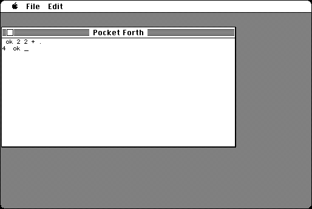

Download
pocket65.zip (152K) Pocket Forth 0.6.5 repackaged into a zipped hfs disk image and checksum file. The disk image can be mounted with Mini vMac.
pocket65.sit.hqx (213K) Pocket Forth 0.6.5 in the original format.source.zip (45K) Pocket Forth source repackaged into a zipped hfs disk image and checksum file. The disk image can be mounted with Mini vMac.
source.sit.hqx (57K) Pocket Forth source in the original format.
copyright: Chris Heilman
mod date: Nov 11, 1995
license: freeware
last known url
(gone)
A “small Forth system”. Source code is available.

If you find these downloads useful, please consider helping the Gryphel Project, which hosts them.
Here are the md5 checksums for the downloads, signed with Gryphel Key 5:
--------- GRY SIGNED TEXT --------- 926a390c02e11d1c4d5c450b2e61a28e pocket65.zip 887b8d63cc88b2e601e7baac0f2ed184 pocket65.sit.hqx ade9a47cb0c03d984239278342b79d8b source.zip b17782c2a773910b88ff62e3b6001ec7 source.sit.hqx ------- BEGIN GRY SIGNATURE ------- Gry/4Xa8CFcUzxdN/KpOMPTmBuZOujYUf+AnCl7L9ChAXvrPI/ct2sbAIk9gZrat eVvvH7kEiPDhjYGKVdhNgXDDNAp3cXWbUPBl12FtezzPwTJe4JcpdLVnImWiAn9f mw9X1TTeoUz5IJEaEyxOWTp+LbCfkzRhI2203Mmo3piYlExwijfUKcZAdVWCYRBv -------- END GRY SIGNATURE --------